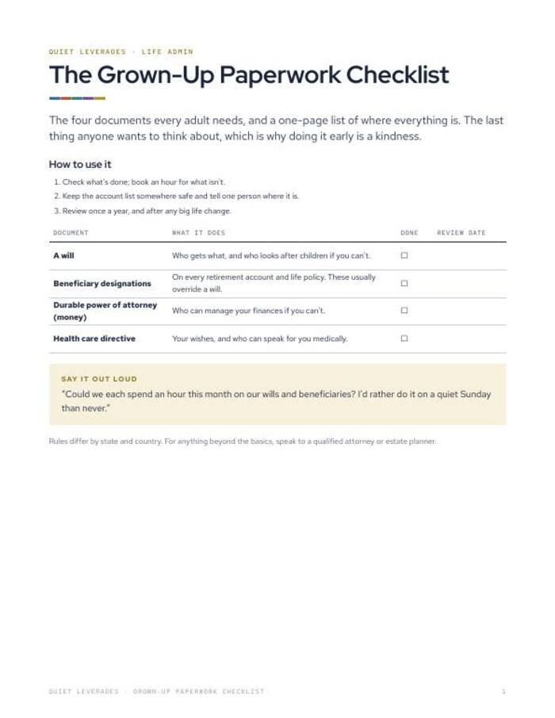
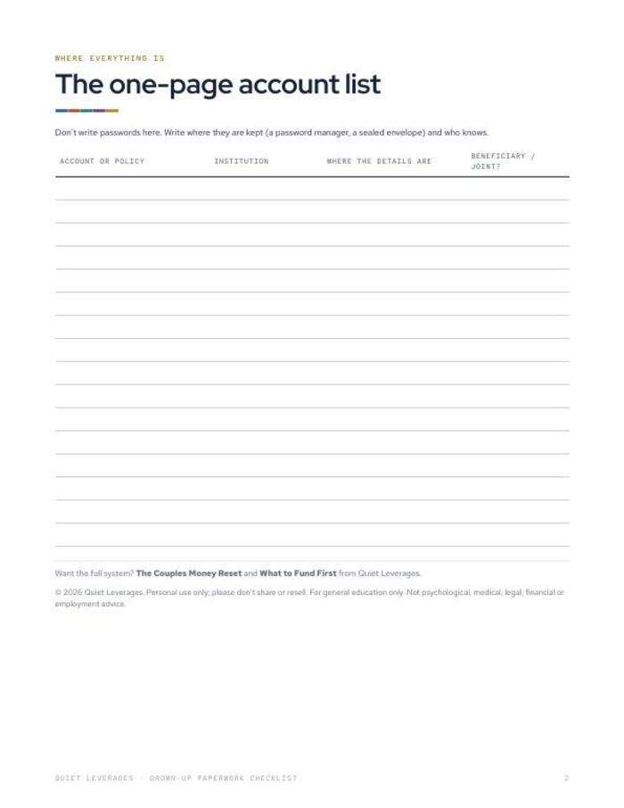

Could someone find your accounts and your wishes tonight? Most households could not.
The four documents every adult needs, plus a one-page list of where everything is kept.
Printable PDF. Print it or fill it in on a tablet. Instant download.

Four documents, checked off
Will, beneficiaries, power of attorney, health care directive, each with a done box and a review date.
One page for where things are
Accounts and policies, who holds them and where the details are kept.
No passwords on the page
You note where details are kept, not the details themselves.
documents every adult needs
page to locate everything
passwords stored
are very confident they split spare money well across debt, savings and retirement. Paperwork is the part of money planning that lets someone else carry on if you cannot.
Vestwell, June 2026What changes after you fill it in
A short list, not a project
Four items you can book an hour for, one at a time.
Everything findable
One page that tells a trusted person where to look.
A review date
Each item has a space to note when you last checked it.
A way to start the talk
A line to say out loud to the person you share life admin with.
Everything in the download
- The four-document checklist. Will, beneficiary designations, durable power of attorney, health care directive.
- One-page account and policy locator. Institution, where the details are, beneficiary or joint holder. No passwords.
- A line to say out loud. To start the conversation at home.
- Printable PDF. 2 pages, US Letter, prints on A4 at fit to page.

Check, store, review
Check what is done
Tick each document you already have and book an hour for what is not.
Keep it somewhere safe
Store the page safely and tell one person where it is.
Review once a year
And after any big life change.
A good fit if the paperwork keeps slipping
Use this if
- You have accounts and policies spread across several places.
- You have been meaning to get a will or beneficiaries in order.
- You want a short checklist, not a legal guide.
Skip it if
- You need legal drafting or advice for your situation. Speak to a qualified attorney or estate planner.
- You want a password manager. This page deliberately holds no passwords.
- You want a money plan. See What to Fund First, which is free.
Why this is worth an hour
are very confident they split spare money well across debt, savings and retirement. Among people earning $200K+, 64% are only somewhat confident.
Vestwell, June 2026of US adults began 2026 feeling financial stress.
NEFE, Jan 2026report money dysmorphia: feeling broke despite a healthy position.
Intuit Credit Karma, via FinderWhat readers say about Grown-Up Paperwork Checklist
Get the paperwork into one place
Four documents, one locator page, two printed pages.
- Four-document checklist
- One-page account and policy locator
- A line to start the conversation
Before you decide
Is this legal advice?
No. It is a checklist. General education, not legal advice. Rules differ by state and country, so for anything beyond the basics speak to a qualified attorney or estate planner.
How long does it take?
Filling in the checklist and locator is a sitting. Getting the documents themselves done takes longer, which is why each has its own done box.
Who is it for?
Any adult. It is most useful if you have dependants, shared accounts or retirement accounts and policies with beneficiaries.
Should I write passwords on it?
No. Write where the details are kept, such as a password manager or a sealed envelope, and who knows.
Can I use it on a tablet?
Yes. It is a PDF, so any PDF app works. It also prints on US Letter or on A4 at fit to page.
Does it include templates for a will?
No. It lists what you need and tracks it. It does not provide legal documents.
The next step after this one


One page that says where everything is.
Fill it in once, review it each year.
Get it for $7Instant download on Gumroad.